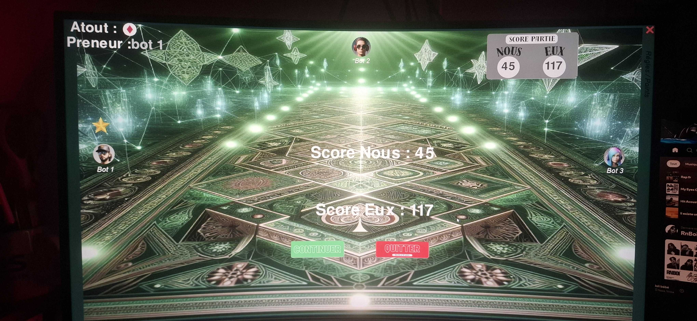
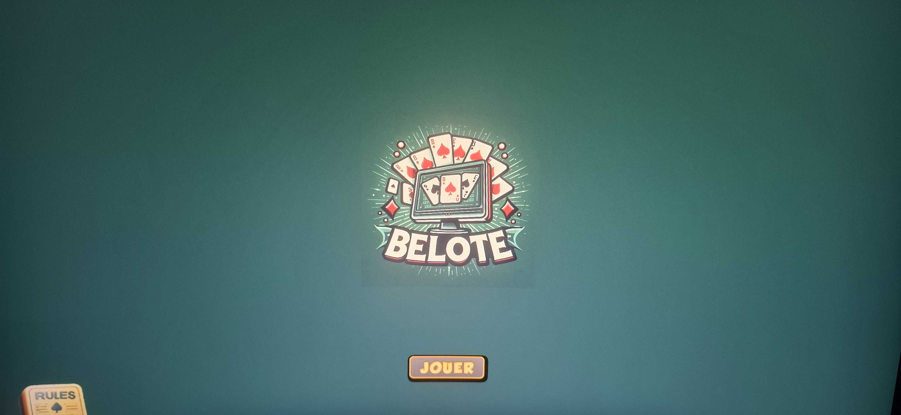
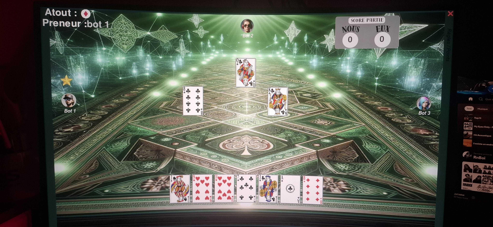

Le Concept
Dans le cadre de ma spécialité NSI en Terminale, j'ai relevé le défi de recréer de zéro le jeu de la Belote, un classique des jeux de cartes français. L'objectif était de développer une application desktop complète intégrant non seulement les règles complexes du jeu (atouts, annonces, prise), mais aussi une interface utilisateur intuitive et fluide. Ce projet en binôme a servi de banc d'essai pour l'application des concepts de programmation orientée objet (POO) dans un environnement graphique en temps réel.



Réalisation
La conception du jeu s'est articulée autour de la bibliothèque Pygame et d'une architecture logicielle rigoureuse :
- Moteur de jeu & POO : Modélisation du jeu via des classes Python pour gérer les entités (Cartes, Paquet, Joueurs, Main). Cette structure a permis de manipuler facilement les 32 cartes du jeu et leurs valeurs changeantes selon l'atout.
- Logique algorithmique : Implémentation d'un système de règles strictes pour valider la légalité des coups, le calcul automatique des points en fin de manche et la gestion du tour par tour.
- Interface Graphique (GUI) : Création d'un environnement visuel dynamique incluant la distribution animée des cartes, la gestion des clics souris pour jouer et l'affichage des scores en direct.
- Gestion des ressources : Optimisation du chargement des sprites (images des cartes) et gestion de la boucle de rafraîchissement pour garantir une expérience utilisateur sans latence.